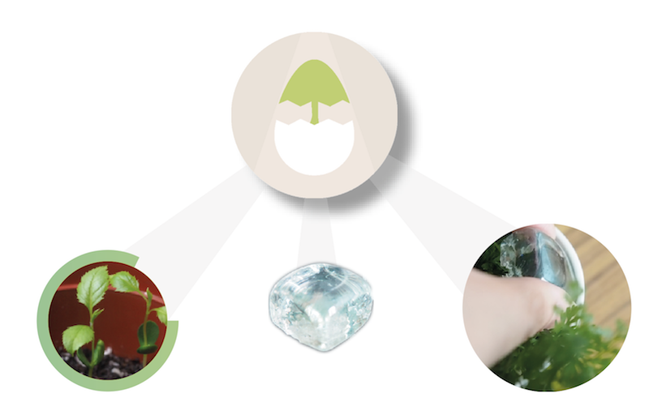
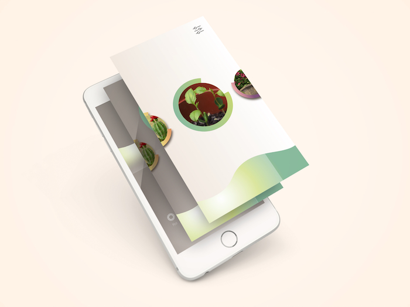

Hatchery
Your plant withered easily? Hatchery may help you to care your plant at home. It is a gardening management app to remind busy planting lovers. Hatchery is very helpful that provides a very accurate information and tips for you. By using a cube-shape detector which called MagicIce, then will inform you the growth of your plants. You may also share your plants’ condition with your friends. Hatchery is an easy-to-use, simple and carefree tool for you to caring your plant!

